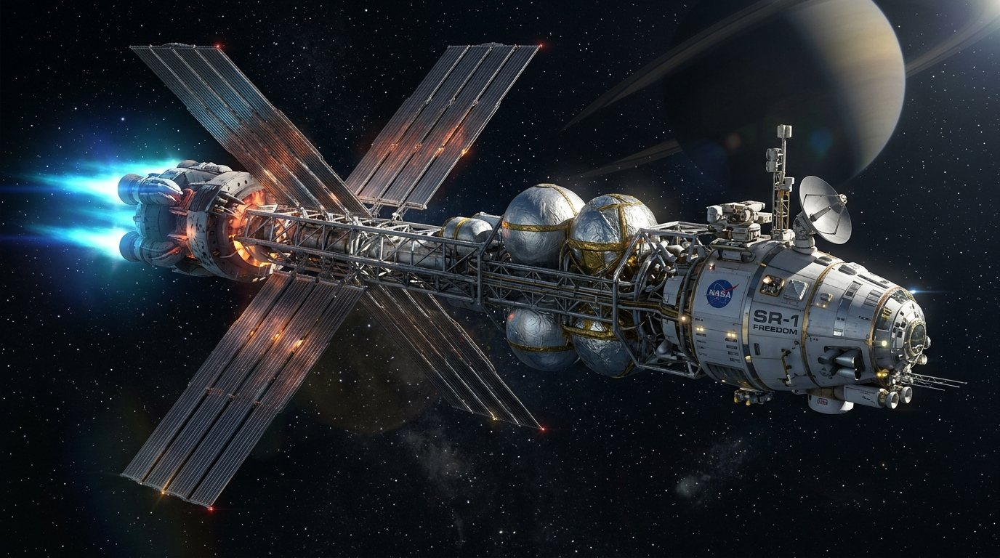

SR-1 Freedom: เมื่อทางเลือกเชิงออกแบบกลายเป็นข้อผูกมัด
บทเรียนการบริหารโครงการวิศวกรรมสหสาขาสำหรับวิศวกรไทย
คณะอนุกรรมการวิศวกรรมสารสนเทศ วิศวกรรมสถานแห่งประเทศไทยฯ (วสท.) · @Dr 3 ·

ภาพประกอบสร้างด้วย AI ไม่ใช่ภาพเหตุการณ์จริง และไม่ใช่แบบยานจริงของ NASA
การล็อกสถาปัตยกรรมภารกิจ (mission architecture) คือจุดที่ทางเลือกเชิงออกแบบ (design trade-offs) กลายเป็นข้อผูกมัด และนั่นคือสิ่งที่องค์การนาซา (NASA) เพิ่งทำกับโครงการ SR-1 Freedom
ภารกิจและการทบทวนครั้งสำคัญ
NASA ทบทวนการออกแบบยาน Space Reactor-1 (SR-1) Freedom ครั้งใหญ่ที่ศูนย์วิจัยเกล็นน์ (Glenn Research Center) และกำหนดองค์ประกอบหลักของยานแล้ว ผู้เข้าร่วมทบทวนมาจากหลายศูนย์ของ NASA กระทรวงพลังงานสหรัฐฯ (Department of Energy) และภาคอุตสาหกรรม
SR-1 มีกำหนดส่งขึ้นสู่อวกาศมุ่งหน้าดาวอังคารช่วงปลายปี 2028 หากสำเร็จ นี่จะเป็นการสาธิตระบบขับเคลื่อนไฟฟ้าพลังนิวเคลียร์ (nuclear electric propulsion, NEP) ในห้วงอวกาศลึกเป็นครั้งแรก ยานจะนำภารกิจ SkyFall ไปด้วย ซึ่งประกอบด้วยเฮลิคอปเตอร์สำรวจดาวอังคารสามลำที่พัฒนาต่อจาก Ingenuity
สถาปัตยกรรมที่เลือกความเสี่ยงต่ำ
แนวทางการออกแบบระมัดระวังโดยเจตนา เครื่องปฏิกรณ์ฟิชชันผลิตไฟฟ้าราว 20 กิโลวัตต์ ผ่านระบบแปลงพลังงานแบบวัฏจักรเบรย์ตันปิด (closed Brayton cycle) ไฟฟ้านี้ป้อนให้ระบบขับเคลื่อนไฟฟ้าที่เดิมพัฒนาไว้สำหรับสถานี Gateway เครื่องปฏิกรณ์จึงเป็นระบบใหม่จริงเพียงระบบเดียว และจะไม่เริ่มทำงานจนกว่ายานจะออกจากวงโคจรโลก
การเลือกเช่นนี้แลกขีดความสามารถสูงสุดกับโอกาสที่จะทันกรอบเวลาปล่อยยานไปดาวอังคารในปี 2028 ทุกส่วนที่ใช้ของเดิมช่วยลดจำนวนสิ่งที่ต้องพิสูจน์ใหม่
องค์ประกอบทีมบอกอะไรเรา
องค์ประกอบของทีมทบทวนบอกอะไรได้มากพอ ๆ กับกำหนดการ การสาธิตบินจริงแบบนี้ต้องรวมงานขับเคลื่อน การแปลงพลังงาน ความปลอดภัยนิวเคลียร์ และวิศวกรรมยานอวกาศไว้ในโครงการเดียว ซึ่งจัดการได้ยาก สหรัฐฯ ไม่ได้ส่งเครื่องปฏิกรณ์ขึ้นอวกาศเลยตั้งแต่ปี 1965 ขีดความสามารถส่วนใหญ่จึงต้องสร้างขึ้นใหม่ ทั้งคน ห่วงโซ่อุปทาน และกระบวนการกำกับดูแล
ความเกี่ยวข้องกับวิศวกรไทย
บทเรียนของ SR-1 ไม่ได้จำกัดอยู่ในงานอวกาศ โครงการวิศวกรรมขนาดใหญ่ในประเทศไทยแทบทั้งหมดเป็นงานสหสาขา ทั้งระบบรางที่รวมโยธา ไฟฟ้า อาณัติสัญญาณ และสื่อสาร โครงข่ายไฟฟ้าอัจฉริยะที่รวมไฟฟ้ากำลัง การวัดคุม และไอที โครงข่ายสื่อสารที่รวมดาวเทียมกับภาคพื้นดิน และโครงการดาวเทียมของประเทศ ความยากของงานเหล่านี้มักไม่อยู่ที่สาขาใดสาขาหนึ่ง แต่อยู่ที่รอยต่อระหว่างสาขา
มีอย่างน้อยสามเรื่องที่วิศวกรไทยนำไปใช้ได้
กำหนดจุดตัดสินใจให้ชัด
การทบทวนอย่างเป็นทางการ เช่น SRR, PDR และ CDR ทำให้ทุกฝ่ายรู้ว่าเมื่อใดทางเลือกยังเปิดอยู่ และเมื่อใดต้องผูกมัด โครงการที่ไม่มีจุดล็อกแบบชัดเจนมักแก้แบบซ้ำไปมาจนงบและเวลาบานปลาย
จัดการรอยต่อเป็นงานหลัก
เอกสารควบคุมรอยต่อ (interface control document) ระบบจัดการโครงแบบ (configuration management) และวิศวกรรมระบบที่อิงแบบจำลอง (model-based systems engineering, MBSE) คือเครื่องมือที่ทำให้วิศวกรต่างสาขาใช้ข้อมูลชุดเดียวกัน งานส่วนนี้เป็นพื้นที่ที่วิศวกรรมสารสนเทศมีบทบาทโดยตรง ตั้งแต่การออกแบบโครงสร้างข้อมูลวิศวกรรม ไปจนถึงการตรวจสอบย้อนกลับได้ (traceability) ระหว่างข้อกำหนดกับผลการทดสอบ
เลือกนวัตกรรมทีละน้อย
SR-1 จำกัดของใหม่ไว้ที่เครื่องปฏิกรณ์ และใช้ของที่พิสูจน์แล้วกับส่วนที่เหลือ หลักนี้เหมาะกับโครงการไทยที่ต้องการสร้างขีดความสามารถใหม่ภายใต้งบและเวลาจำกัด การรู้ว่าจะไม่เปลี่ยนอะไรสำคัญพอ ๆ กับการรู้ว่าจะเปลี่ยนอะไร
นอกจากเทคนิคแล้ว การรวมหลายสาขายังเป็นเรื่องของคนและองค์กร หน่วยงานรัฐ มหาวิทยาลัย และภาคเอกชนต้องตกลงกันตั้งแต่ต้นว่าใครเป็นเจ้าของการตัดสินใจใด และใครรับผิดชอบรอยต่อใด วสท. ในฐานะเวทีที่รวมวิศวกรทุกสาขา มีบทบาทได้ทั้งในการพัฒนาแนวปฏิบัติร่วม และการสร้างวิศวกรระบบที่มองข้ามขอบสาขาของตนเองได้
ส่งท้าย
บททดสอบจริงของ SR-1 จะเกิดหลังปล่อยยาน เมื่อระบบต้องทำงานในห้วงอวกาศลึก ก่อนถึงวันนั้น การตัดสินใจเชิงสถาปัตยกรรมที่ล็อกไว้ในวันนี้จะเป็นตัวกำหนดว่าการสาธิตจะพิสูจน์อะไรได้บ้าง และหน่วยงานหรือบริษัทอื่น รวมถึงวิศวกรไทย จะเรียนรู้อะไรจากโครงการนี้ได้
แหล่งอ้างอิง
- NASA — Space Reactor-1 Freedom
- NASA Glenn — SR-1 Freedom Advances with Progress on Nuclear Power Module
- Aviation Week — Space Nuclear Ambitions Face Defining Test
- Aviation Week — NASA Aims To Demonstrate Nuclear Electric Propulsion In Late 2028
- BGR — NASA's Next Big Step In Space Travel Will Be A Nuclear-Powered Mission To Mars